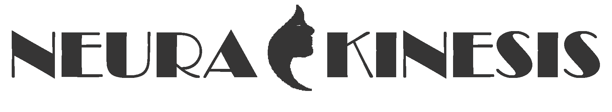

+372 5871 2338
The future is here
Experience it todayWho are we?
We are developers of a hardware-software complex NeuraKinesis that is aimed at improving the social adaptation of people with mobility impairments through the implementation of an innovative method of sensorineural reprogramming in a spatial orientation control system and VR technologies.
The NeuraKinetiks project focuses on developing VR-associated software for
rehabilitation and quick recovery of patients after strokes or injuries. The method is
based
on the concept of biofeedback, specifically neural biofeedback.
In the case of brain damage or immobilization due to injury, there is a disruption of
neural
modulation pathways, which leads to dysfunction in the musculoskeletal system, motor
skills,
and positional abilities. Restoring the mechanisms of neural biofeedback directly
affects
the recovery timeframe and rehabilitation duration.
The NeuraKinesis project is built upon the CleverPoint technology, which is a
VR-integrated
wearable technology. CleverPoint collects and analyzes the user's physiological
responses
(such as electroencephalogram, electrocardiogram, heart rate) while engaging with VR
content. Through the VR application, this technology allows for the identification and
recording of key physiological reactions in response to specific tasks.
Our solution
- Proprietary technique of sensorineural reprogramming
- VR environment during rehabilitation
- 35 Personal Rehabilitation Programs
- 30 Training Exercises
- 20 Training Modes
- 8 Rehabilitation Techniques

Our Team
Siarhei Kulpeksha
Founder & CEO
ceo@neurakinesis.eu
Company founder, father of our goals and values, nurtured team talents.
Alex Smirnov
MD, PhD, project consultant partner, developer of the
unique
Clever Point neurophysiological feedback technology used in the NeuraKinesis project.
Hanna Maroz
PhD, project partner, startup accelerator
manager
For Hanna there is no word "impossible". She claims that the impossible will take her a little longer.
Max Gorbatsevich
business development consultant, CEO at SAMPLYFY
Highly experienced in MEDICAL IT startups, avoids common pitfalls with expertise.
Evgenijs Curikovs
MD, medical rehabilitation consultant
Medical rehabilitation and sales expert, invaluable in project commercialization understanding.
Eugene Mandrusov
PhD, MBA - head of the development team
If during the day you hear more than five words from Evgeny, you are very lucky. Do not distract him for nothing.
Vyacheslau Cipurko
Business analyst
Business process analysis expert, brings fresh perspective, identifies waste, saves time and resources with positive communication.
Andrey Jasukevich
MD, PhD, consultant in the rehabilitation of
patients
With vast experience in practical medicine, , Andrey is certainly one of the key links in the project.
Sandra Maria Kaer
Territory sale manager
Great market knowledge, intelligence, and perseverance make Sandra the ideal representative for our technologies.

Elena Kulpeksha
Project coordinator
Elena is the first person to meet at the NeuraKinesis psychophysiological rehabilitation center. Helps to reveal psycho-physiological traits in 30-40 minutes of testing.
Our advantages
We have several advantages that make us leaders in the field of rehabilitation, leading to the best possible outcomes for our patients. Those are: